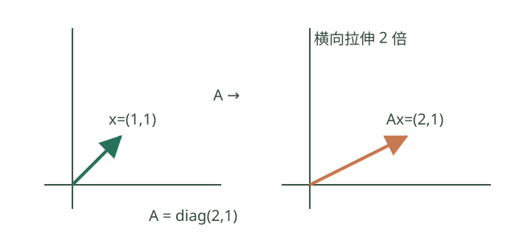

矩阵与运算
初学者先理解什么？
矩阵是按行列排列的数表；\(m\times n\) 表示 \(m\) 行、\(n\) 列。矩阵乘向量可理解为把向量变成另一个向量，乘法时内部维数必须匹配。

例如 \(A=\operatorname{diag}(2,1)\) 把 \((1,1)^T\) 变为 \((2,1)^T\)。先检查维度，再计算各行与输入向量的内积；矩阵乘法通常不能交换顺序。
跟着算一遍。 设 \(A=\begin{pmatrix}1&2\\0&1\end{pmatrix}\)，\(x=(3,4)^T\)。\(A\) 有两列，\(x\) 有两个分量，维度匹配；第一行算 \(1\cdot3+2\cdot4=11\)，第二行算 \(0\cdot3+1\cdot4=4\)，因此 \(Ax=(11,4)^T\)。也可理解为 \(3(1,0)^T+4(2,1)^T=(11,4)^T\)。
3.1 运算规则
\[ (A+B)_{ij}=a_{ij}+b_{ij},\qquad (AB)_{ij}=\sum_k a_{ik}b_{kj}. \]
A 为 m×n、B 为 n×p 时，AB 为 m×p。矩阵乘向量 Ax 是 A 的列向量按 x 的分量形成的线性组合。
- 结合律、分配律成立；一般 AB≠BA，甚至 BA 可能无定义。
- AB=0 不必推出 A=0 或 B=0；一般不能约去一个矩阵。
- (AB)^T=B^TA^T；(A+B)^T=A^T+B^T。
- 单位矩阵 I 满足 AI=A、IA=A，注意各自尺寸。
- 迹 tr(A)=对角元之和；A、B 尺寸使 AB、BA 都为方阵时，tr(AB)=tr(BA)。
矩阵运算公式的逐项核验
- 乘法与结合律： 若 \(A\) 为 \(m\times n\)、\(B\) 为 \(n\times p\)、\(C\) 为 \(p\times q\)，则 \(((AB)C)_{ij}=\sum_k(\sum_l a_{il}b_{lk})c_{kj}=\sum_l a_{il}(\sum_k b_{lk}c_{kj})=(A(BC))_{ij}\)。有限和可交换求和顺序，故 \((AB)C=A(BC)\)。将元素公式对 \(B+C\) 展开，同理得分配律；前提是相关尺寸匹配。
- 转置： \(((AB)^T)_{ij}=(AB)_{ji}=\sum_k a_{jk}b_{ki}=(B^TA^T)_{ij}\)，因此 \((AB)^T=B^TA^T\)。按元素直接展开同样得到 \((A+B)^T=A^T+B^T\)。
- 迹： 若 \(A\) 为 \(m\times n\)、\(B\) 为 \(n\times m\)，则 \(\operatorname{tr}(AB)=\sum_{i=1}^{m}\sum_{j=1}^{n}a_{ij}b_{ji}=\operatorname{tr}(BA)\)。两个乘积可为不同尺寸的方阵，但迹都是数。
- 不满足交换律与消去律的反例： \(A=\begin{pmatrix}1&0\\0&0\end{pmatrix}\)、\(B=\begin{pmatrix}0&1\\0&0\end{pmatrix}\) 时，\(AB=B\) 而 \(BA=0\)。同时 \(B\ne0,A\ne0\) 却 \(BA=0\)，说明不能把数的零乘积性质直接用于矩阵。
3.2 逆矩阵
方阵 A 可逆指存在 A⁻¹ 使 AA⁻¹=A⁻¹A=I。
\[ (AB)^{-1}=B^{-1}A^{-1},\qquad(A^T)^{-1}=(A^{-1})^T. \]
条件：参与求逆的方阵可逆。二阶矩阵：
\[ \begin{pmatrix}a&b\\c&d\end{pmatrix}^{-1} =\frac1{ad-bc}\begin{pmatrix}d&-b\\-c&a\end{pmatrix},\qquad ad-bc\neq0. \]
数值求解 Ax=b 通常用分解与求解算法，不必显式计算逆矩阵。
逆矩阵公式核验。 对可逆方阵 \(A,B\)，直接计算 \((AB)(B^{-1}A^{-1})=A(BB^{-1})A^{-1}=I\)，反向相乘也为 \(I\)，故 \((AB)^{-1}=B^{-1}A^{-1}\)。将 \(AA^{-1}=A^{-1}A=I\) 分别转置，可见 \((A^{-1})^T\) 与 \(A^T\) 的双侧乘积均为 \(I\)。二阶公式则由直接相乘验证： \[ \begin{pmatrix}a&b\\c&d\end{pmatrix}\begin{pmatrix}d&-b\\-c&a\end{pmatrix} =(ad-bc)I. \] 当 \(ad-bc\ne0\) 才能除以它；若其为零，则矩阵列向量相关、不可逆。
矩阵乘法为什么要这样定义？
假设某工厂两种商品的原料用量由矩阵 \(A\) 表示，订单数量为 \(x\)。第 \(i\) 种原料总量是 \(\sum_j a_{ij}x_j\)，正是向量 \(Ax\) 的第 \(i\) 项。若先由 \(B\) 把客户订单转成商品数量，再由 \(A\) 转成原料用量，结果是 \(A(Bx)=(AB)x\)。这个“连续执行两个变换”的要求决定了矩阵乘法的行列求和形式。